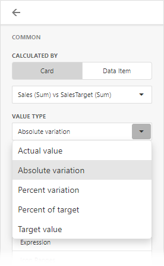

Conditional Formatting
Use conditional formatting to change the background color of the card or to highlight individual card elements (such as title or value).

Note
Cards that use a legacy layout do not support conditional formatting.
Supported Format Rules
Format rules that can be applied to different data item types are as follows:
- numeric
- Value
- Top-Bottom
- Average
- Expression
- Icon Ranges
- Color Ranges
- Gradient Ranges
- string
- Value (with the condition type set to Equal To, Not Equal To or Text that Contains)
- Expression
- date-time
- Value
- A Date Occurring (for dimensions with a continuous date-time group interval)
- Expression
- Icon and Color Ranges
- Color Ranges
- Gradient Ranges
Refer to the following topic for more information about format condition types: Conditional Formatting in Web Dashboard.
Create and Edit a Format Rule
You can create and edit format rules in the Conditional Formatting section that is located in the following places:
The dashboard item's Options menu
The data item menu
Refer to the following topic for information on how to create and edit format rules: Conditional Formatting in Web Dashboard.
Appearance Settings
You can add an icon to the card layout element or configure the style for display text or background color. To do this, open the format rule's Condition section and specify the settings:
Appearance
You can select a predefined style or create a Custom Style in the Appearance tab. You can specify background color, text color, and font settings.
The background color applies to the entire card. Text settings allow you to specify a target element.

Icons
You can select an predefined icon from the Icon tab.
The image below displays the result of the format rule that adds the green check icon to the Category dimension layout element:

Card-Specific Format Condition Settings
Available settings in the Common section depend on the selected Calculated by option:
Card
The Card option specifies a data item container (a card) whose values are used to calculate the format rule. The Value Type field allows you to pre-process the card's value before it takes part in calculations.

If a dashboard item contains multiple cards, apply a format rule to the active card to see the changes. To switch between cards, click the Values button in the dashboard item caption. Note that the expression format condition applies to all cards regardless of the specified card.
Data Item
For the Data Item option you can choose a hidden measure or series dimension. The rule applies to all cards in a Card item.

To apply the appearance settings to the certain card layout element, use the drop-down Apply to list. The All elements value applies the format rule to all card elements.